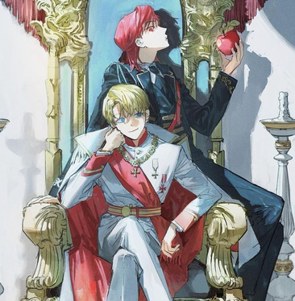
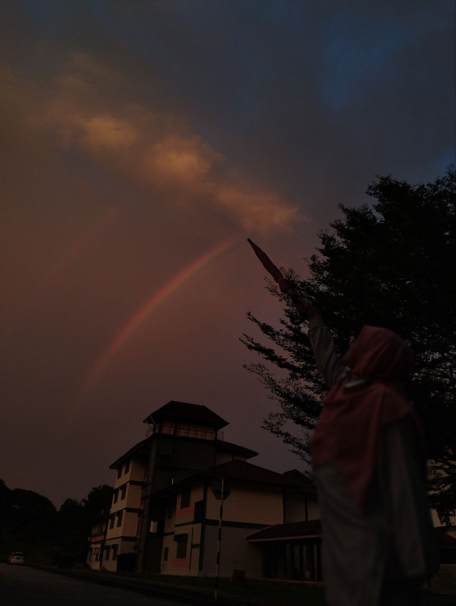

| My Hobbies | ||||
|---|---|---|---|---|
| Photograpghy | Reading | Gaming | Cooking | Watching |
|
Sunset |
ORV |
Honkai Star Rail |
Buttermilk Chicken | Anime |
|
Crowning Sun |
 TOTCF |
 Genshin Impact |
Potatoe Based Dishes | Movies |
|
Crown |
Solo Max-level Newbie |
 Twisted Wonderland |
Baking | K-drama |
|
 Rainbow Magic |
 Chibi ORV |
 Honkai Star Rail |
Malaysian Cuisine | Youtube Videos |
 Honkai Star Rail |
 Honkai Star Rail |
 Honkai Star Rail |
Western Cuisien | Cooking videos |